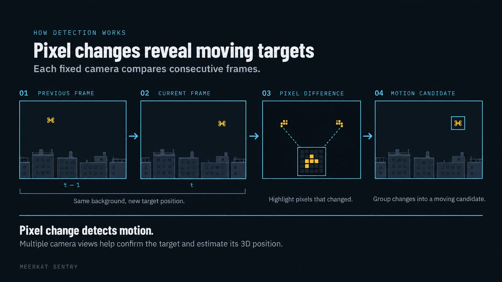
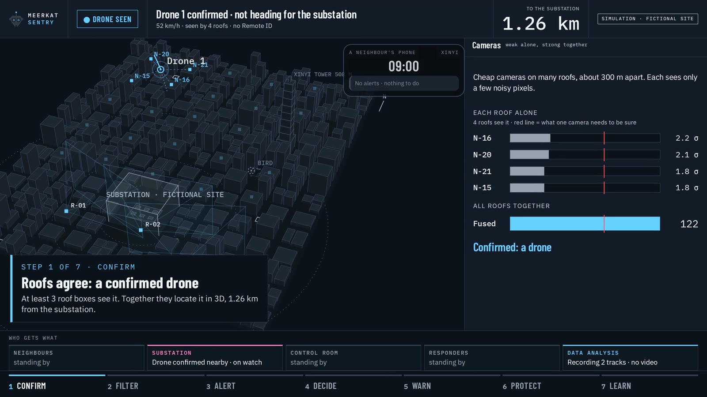
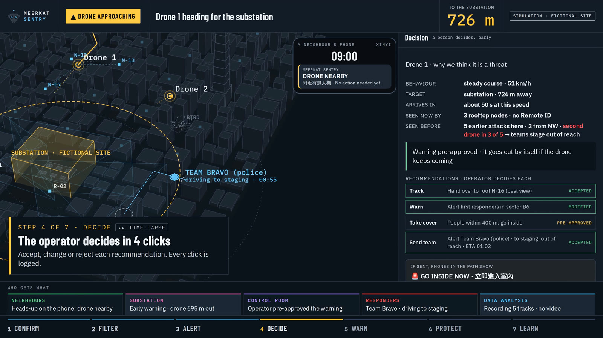
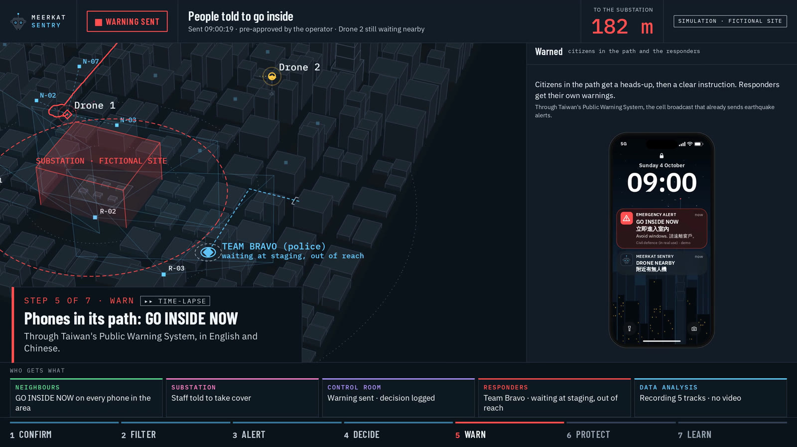
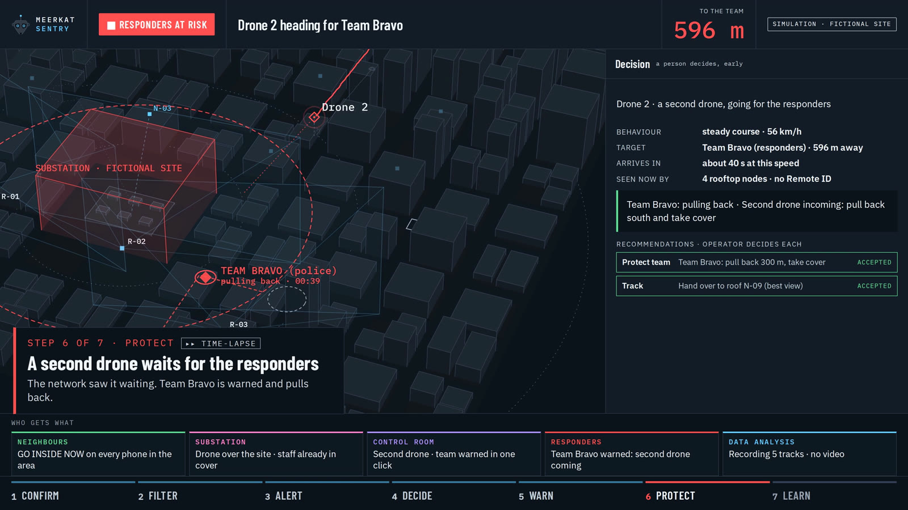
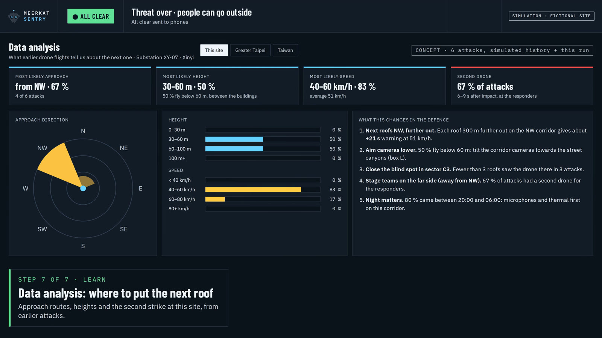
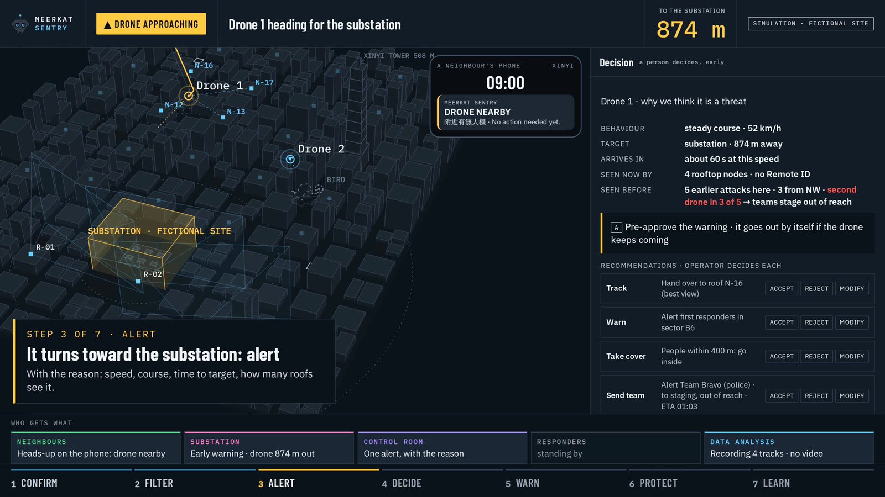

Team 08 · European Defense Tech Hackathon · Taipei, 2–4 Oct 2026 · Challenge 04
In a city, small drones fly below the roofs, where radar cannot see. Meerkat Sentry puts cheap camera boxes on many roofs. When three roofs see the same object, it is a confirmed drone, located in 3D. An operator gets one alert with the reason, and with one click the phones in the drone's path say: go inside.
Vision · 33 s · simulation of the finished system in a fictional neighbourhood
2–6 cheap cameras per roof. Video stays in the box; only detections leave it.
2 · NETWORK
Confirm
Each camera alone sees a few pixels. 3 roofs agreeing make a confirmed drone, in 3D. Birds, balls and registered drones are filtered.
3 · OPERATOR
Decide
One alert with the reason: speed, course, time to target. Accept, change or reject each recommendation. Every click is logged.
4 · PHONES
Warn
People in the path are told to go inside. In the real product through Taiwan's Public Warning System, like an earthquake alert. Responders are warned too.

Real · built at the hackathon
Three ordinary cameras, one drone
3 Raspberry Pi camera nodes and a controller that fuses them into one 3D track
Phone warning in English and Chinese, sent to real phones through a Telegram demo group
Outdoor test, 4 Oct: a camera spots a drone against the sky, the operator confirms, the phone gets the alert
Real footage from our lab test, 3 Oct 2026: all three cameras mark the same drone.
Real, outdoors on campus, 4 Oct 2026: a camera spots the drone against the sky, an image check scores it, the operator presses “Confirm drone”, and the phone gets the alert. This alert came from one station; fusing several roofs into one 3D track outdoors is the next step.
Simulation · fictional neighbourhood
The same software, for a city
24 roof boxes, a drone heading for a substation, a second drone waiting for the responders. Pre-approving the warning gives people 34 s instead of 26 s to get inside.

1 · Roofs agree: a confirmed drone

2 · The operator decides in 4 clicks

3 · Phones in the path: GO INSIDE NOW

4 · A second drone waits for the responders

5 · Every incident teaches the network: tracks only, no video

An alert always says why
Honest status
What is not proven yet
Outdoor range and false-alarm rate are not measured yet. That is the first job of a pilot on real roofs.
Night and fog: cheap cameras do not see the sky at night. Next: thermal cameras and microphones in the same box, so a drone is confirmed by sight, heat and sound.
Cost: one roof box is about $345 in parts today; about $100 is the target at volume.
Camera nodes and fusion controller: Edoardo Dominikus and Sean Ching. Operator dashboard, city simulation and pitch deck: Jan Barkemeyer. Pitch on stage: Robin Fischer.